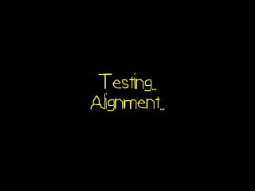

Text Alignment

Last Updated 8/09/12
Up until now we're always been drawing left aligned text. Here we'll align text horizontally and vertically.From LFont.h
enum LFontTextAlignment
{
LFONT_TEXT_ALIGN_LEFT = 1,
LFONT_TEXT_ALIGN_CENTERED_H = 2,
LFONT_TEXT_ALIGN_RIGHT = 4,
LFONT_TEXT_ALIGN_TOP = 8,
LFONT_TEXT_ALIGN_CENTERED_V = 16,
LFONT_TEXT_ALIGN_BOTTOM = 32
};
Here are some enumerated constants to define how to align our text. You might have noticed that they are powers of two. It's because we're going to be doing bitwise operations
with them.
From LFont.h
void renderText( GLfloat x, GLfloat y, std::string text, LFRect* area = NULL, int align = LFONT_TEXT_ALIGN_LEFT );
/*
Pre Condition:
-A loaded font
Post Condition:
-Renders text
-If area is given, text is aligned within given area
Side Effects:
-Binds member texture and data buffers
*/
GLfloat getLineHeight();
/*
Pre Condition:
-A loaded font
Post Condition:
-Return height for a single line of text
Side Effects:
-None
*/
private:
GLfloat substringWidth( const char* substring );
/*
Pre Condition:
-A loaded font
Post Condition:
-Returns the sprite width until it reached a '\n' or '\0'
Side Effects:
-None
*/
GLfloat stringHeight( const char* thisString );
/*
Pre Condition:
-A loaded font
Post Condition:
-Returns the pixel height required to render the font
Side Effects:
-None
*/
The function renderText() has been augmented to take in a alignment area and an alignment. The function getLineHeight() does what you'd expect it to do. The function
substringWidth() is going to be used for alignment. When you have some text like this:
Here is some text
we might want to render
at some point
Each line of text has a different width and in order to align it we need to get the width of each of the substrings.
Lastly stringHeight() returns the height of a whole string in pixels.
Here is some text
we might want to render
at some point
Each line of text has a different width and in order to align it we need to get the width of each of the substrings.
Lastly stringHeight() returns the height of a whole string in pixels.
From LFont.cpp
GLfloat LFont::getLineHeight()
{
return mLineHeight;
}
The function getLineHeight() simply gets the line height we calculated in the font loading function.
From LFont.cpp
GLfloat LFont::stringHeight( const char* thisString )
{
GLfloat height = mLineHeight;
//Go through string
for( int i = 0; thisString[ i ] != '\0'; ++i )
{
//Space
if( thisString[ i ] == '\n' )
{
height += mLineHeight;
}
}
return height;
}
A single line of text has a pixel height of "mLineHeight". For every additional newline we find in the string we add on another line height.
From LFont.cpp
GLfloat LFont::substringWidth( const char* substring )
{
GLfloat subWidth = 0.f;
//Go through string
for( int i = 0; i < substring[ i ] != '\0' && substring[ i ] != '\n' ; ++i )
{
//Space
if( substring[ i ] == ' ' )
{
subWidth += mSpace;
}
//Character
else
{
//Get ASCII
GLuint ascii = (unsigned char)substring[ i ];
subWidth += mClips[ ascii ].w;
}
}
return subWidth;
}
To find the width of a substring, we just keep adding on the width of each character or space until we reach a newline or the end of the string.
From LFont.cpp
void LFont::renderText( GLfloat x, GLfloat y, std::string text, LFRect* area, int align )
{
//If there is a texture to render from
if( getTextureID() != 0 )
{
//Draw positions
GLfloat dX = x;
GLfloat dY = y;
//If the text needs to be aligned
if( area != NULL )
{
//Correct empty alignment
if( align == 0 )
{
align = LFONT_TEXT_ALIGN_LEFT | LFONT_TEXT_ALIGN_TOP;
}
At the top of the renderText() function, we initialize the draw position in case there's no need to align.
If an alignment area has been given, we make sure that the alignment constant isn't 0. If it is, we give it a default top left alignment.
If an alignment area has been given, we make sure that the alignment constant isn't 0. If it is, we give it a default top left alignment.
From LFont.cpp
//Handle horizontal alignment
if( align & LFONT_TEXT_ALIGN_LEFT )
{
dX = area->x;
}
else if( align & LFONT_TEXT_ALIGN_CENTERED_H )
{
dX = area->x + ( area->w - substringWidth( text.c_str() ) ) / 2.f;
}
else if( align & LFONT_TEXT_ALIGN_RIGHT )
{
dX = area->x + ( area->w - substringWidth( text.c_str() ) );
}
Here we set the horizontal text alignment. When we do the horizontal alignment calculations, we use the substring width because each line of text can have a different starting
draw position.
From LFont.cpp
//Handle vertical alignment
if( align & LFONT_TEXT_ALIGN_TOP )
{
dY = area->y;
}
else if( align & LFONT_TEXT_ALIGN_CENTERED_V )
{
dY = area->y + ( area->h - stringHeight( text.c_str() ) ) / 2.f;
}
else if( align & LFONT_TEXT_ALIGN_BOTTOM )
{
dY = area->y + ( area->h - stringHeight( text.c_str() ) );
}
}
Depending on the height of the overall text, we're going to have a different starting y draw position.
From LFont.cpp
//Move to draw position
glTranslatef( dX, dY, 0.f );
//Set texture
glBindTexture( GL_TEXTURE_2D, getTextureID() );
//Enable vertex and texture coordinate arrays
glEnableClientState( GL_VERTEX_ARRAY );
glEnableClientState( GL_TEXTURE_COORD_ARRAY );
//Bind vertex data
glBindBuffer( GL_ARRAY_BUFFER, mVertexDataBuffer );
//Set texture coordinate data
glTexCoordPointer( 2, GL_FLOAT, sizeof(LVertexData2D), (GLvoid*) offsetof( LVertexData2D, texCoord ) );
//Set vertex data
glVertexPointer( 2, GL_FLOAT, sizeof(LVertexData2D), (GLvoid*) offsetof( LVertexData2D, position ) );
//Go through string
for( int i = 0; i < text.length(); ++i )
{
//Space
if( text[ i ] == ' ' )
{
glTranslatef( mSpace, 0.f, 0.f );
dX += mSpace;
}
Continuing on with the renderText() function, we translate to the drawing point and bind our data as usual. Then we start iterating through the string as usual. What's going to
change about our string iteration is how we handle newlines.
From LFont.cpp
//Newline
else if( text[ i ] == '\n' )
{
//Handle horizontal alignment
GLfloat targetX = x;
if( area != NULL )
{
if( align & LFONT_TEXT_ALIGN_LEFT )
{
targetX = area->x;
}
else if( align & LFONT_TEXT_ALIGN_CENTERED_H )
{
targetX = area->x + ( area->w - substringWidth( &text.c_str()[ i + 1 ] ) ) / 2.f;
}
else if( align & LFONT_TEXT_ALIGN_RIGHT )
{
targetX = area->x + ( area->w - substringWidth( &text.c_str()[ i + 1 ] ) );
}
}
//Move to target point
glTranslatef( targetX - dX, mNewLine, 0.f );
dY += mNewLine;
dX += targetX - dX;
}
When we have a newline, we have to calculate at what x offset we want to start rendering at. We initialize "targetX" in case we don't have an alignment area. Then we align the
next line of text based off of the substring width.
You may be wondering how that funky expression inside of substringWidth() works. The std string function c_str() returns a const char*. We then use the array index operator to get the string starting at "i" + 1. "i" is the current character (which is '\n') in the string and we want to figure out what the width of the substring starting at the next line. Lastly use the & operator to get the const char* pointer to the next line of text.
When we calculated "targetX" we translate to it and go down one line.
You may be wondering how that funky expression inside of substringWidth() works. The std string function c_str() returns a const char*. We then use the array index operator to get the string starting at "i" + 1. "i" is the current character (which is '\n') in the string and we want to figure out what the width of the substring starting at the next line. Lastly use the & operator to get the const char* pointer to the next line of text.
When we calculated "targetX" we translate to it and go down one line.
From lFont.cpp
//Character
else
{
//Get ASCII
GLuint ascii = (unsigned char)text[ i ];
//Draw quad using vertex data and index data
glBindBuffer( GL_ELEMENT_ARRAY_BUFFER, mIndexBuffers[ ascii ] );
glDrawElements( GL_QUADS, 4, GL_UNSIGNED_INT, NULL );
//Move over
glTranslatef( mClips[ ascii ].w, 0.f, 0.f );
dX += mClips[ ascii ].w;
}
}
//Disable vertex and texture coordinate arrays
glDisableClientState( GL_TEXTURE_COORD_ARRAY );
glDisableClientState( GL_VERTEX_ARRAY );
}
}
The rest of renderText() works as it did before.
From LUtil.cpp
//Text renderer
LFont gFont;
//Alignment variables
LFontTextAlignment gAlignH = LFONT_TEXT_ALIGN_LEFT;
LFontTextAlignment gAlignV = LFONT_TEXT_ALIGN_TOP;
int gAlign = gAlignH | gAlignV;
//Screen area
LFRect gScreenArea = { 0.f, 0.f, SCREEN_WIDTH, SCREEN_HEIGHT };
At the top of LFont.cpp we have a font object, variables for alignment, and rectangle to define the area of the screen.
From LUtil.cpp
bool loadMedia()
{
//Load font
if( !gFont.loadFreeType( "24_text_alignment/lazy.ttf", 60 ) )
{
printf( "Unable to load ttf font!\n" );
return false;
}
return true;
}
void update()
{
}
void render()
{
//Clear color buffer
glClear( GL_COLOR_BUFFER_BIT );
glLoadIdentity();
//Render yellow text
glColor3f( 1.f, 1.f, 0.f );
gFont.renderText( 0.f, SCREEN_HEIGHT / 2.f, "Testing...\nAlignment...", &gScreenArea, gAlign );
//Update screen
glutSwapBuffers();
}
Here we load the font and render the text aligned inside of the screen area.
From LUtil.cpp
void handleKeys( unsigned char key, int x, int y )
{
if( key == 'a' )
{
switch( gAlignH )
{
case LFONT_TEXT_ALIGN_LEFT:
gAlignH = LFONT_TEXT_ALIGN_RIGHT;
break;
case LFONT_TEXT_ALIGN_CENTERED_H:
gAlignH = LFONT_TEXT_ALIGN_LEFT;
break;
case LFONT_TEXT_ALIGN_RIGHT:
gAlignH = LFONT_TEXT_ALIGN_CENTERED_H;
break;
}
}
else if( key == 'd' )
{
switch( gAlignH )
{
case LFONT_TEXT_ALIGN_LEFT:
gAlignH = LFONT_TEXT_ALIGN_CENTERED_H;
break;
case LFONT_TEXT_ALIGN_CENTERED_H:
gAlignH = LFONT_TEXT_ALIGN_RIGHT;
break;
case LFONT_TEXT_ALIGN_RIGHT:
gAlignH = LFONT_TEXT_ALIGN_LEFT;
break;
}
}
else if( key == 'w' )
{
switch( gAlignV )
{
case LFONT_TEXT_ALIGN_TOP:
gAlignV = LFONT_TEXT_ALIGN_BOTTOM;
break;
case LFONT_TEXT_ALIGN_CENTERED_V:
gAlignV = LFONT_TEXT_ALIGN_TOP;
break;
case LFONT_TEXT_ALIGN_BOTTOM:
gAlignV = LFONT_TEXT_ALIGN_CENTERED_V;
break;
}
}
else if( key == 's' )
{
switch( gAlignV )
{
case LFONT_TEXT_ALIGN_TOP:
gAlignV = LFONT_TEXT_ALIGN_CENTERED_V;
break;
case LFONT_TEXT_ALIGN_CENTERED_V:
gAlignV = LFONT_TEXT_ALIGN_BOTTOM;
break;
case LFONT_TEXT_ALIGN_BOTTOM:
gAlignV = LFONT_TEXT_ALIGN_TOP;
break;
}
}
//Set alignment
gAlign = gAlignH | gAlignV;
}
Finally, you can cycle through the horizontal/vertical text alignments by pressing w/a/s/d.